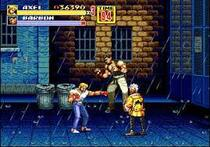
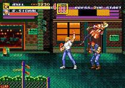

29.99€
sysnospsis :
Un an après avoir défait Mr. X, les policiers Axel, Blaze et Adam ont repris le cours normal de leur existence, jusqu'à ce que ce dernier ne soit enlevé. Tel est le point de départ de Streets of Rage 2. Le jeu demeure un beat'em all classique, mais s'enrichit grandement en termes de jouabilité par rapport à son prédécesseur, ainsi qu'en termes d'interactivité des environnements..
plateforme | action | 2 joueur | +3 ans

